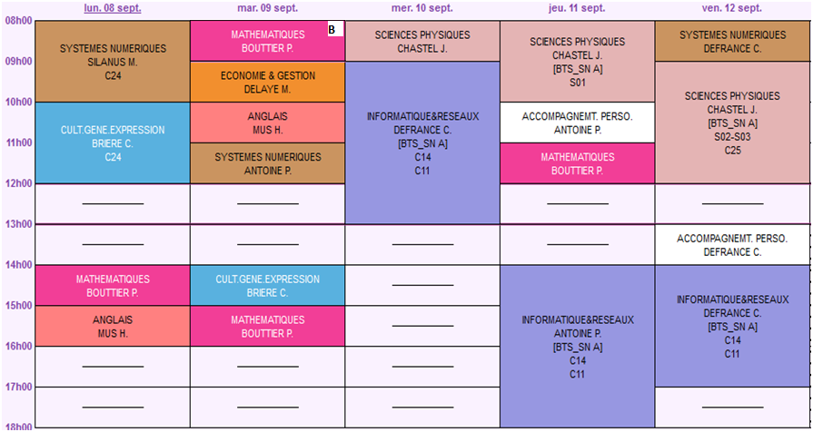

Emploi du temps en STI2D, Exemple dy Lycée Robert Garnier (Pays de la Loire)


Emploi du temps en BTS CRSA, Exemple du Lycée Joliot Curie (Bretagne, Rennes)

Emploi du temps en BTS Système Numérique, Exemple du Lycée Alphonse Benoit (L'Isle sur la Sorgue)
